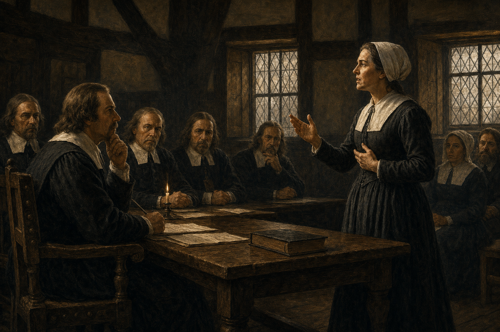

Building a Puritan Society
“They Came for Religious Freedom.”
True enough. But freedom for whom?
Section I
What did Pilgrims and Puritans actually want?
Two Movements, Not One
Pilgrims (Separatists)
- Church of England beyond reform
- Left England, then Holland
- Founded Plymouth, 1620
- Always a small colony
Puritans (Non-Separatists)
- Most stayed inside the Church
- Wanted to reform it from within
- Massachusetts Bay: the big experiment
Plymouth: A Short Prologue
- Mayflower crosses, 1620
- About 102 passengers — only a third Pilgrims
- Land outside their expected territory
- Draft the Mayflower Compact
- Severe winter — roughly half die

A 1899 painting of the signing — not a contemporary image
→ Independent Study: The Mayflower Compact Myth
An Alliance of Mutual Advantage
- Disease had already reshaped the region
- Wampanoag leader Massasoit sought allies
- Rivalry with the Narragansetts mattered
- Both sides had reasons of their own

A 1921 memorial statue — not a period portrait of Massasoit
By 1630, Plymouth was still small. Massachusetts Bay was about to become the real experiment.
⏸ Pause & Reflect
Plymouth needed the Wampanoag alliance simply to survive its first years.
From the Wampanoag's perspective, what did this alliance offer them?
Section II
What does a society look like when it is organized around religious purpose?
Massachusetts Bay, 1630
John Winthrop and other leaders carried the Massachusetts Bay Company's charter with them across the ocean.
- Unusual control over their own government
- Purpose mattered more than profit
Massachusetts Bay: How should a Christian community live?

John Winthrop, first governor of Massachusetts Bay
A Covenant With God
Covenant theology
- God is sovereign
- Salvation cannot simply be earned
- Covenant: a binding, mutual obligation
Family and Town
Family
- Migrants arrived as families
- Higher birth rates, longer lives
- Communities of related households
Town
- Meetinghouse and congregation
- Local government, nearby farms
- Settlement clustered, not scattered
Education and Government
Education
- Scripture required literacy
- Harvard founded, 1636
- Towns required to run schools
Government
- Ministers held real influence
- But held no office by right
- Elected representatives, local voice
That political puzzle is next lecture's problem.
⏸ Build the Society
You believe God will judge your whole community by how faithfully it lives.
Which part of life would religion probably shape first — family? school? government? public behavior?
Section III
What happens when someone inside the community says the community itself is wrong?
How Far Should Government Reach?
Roger Williams pushed the logic of conscience further than Massachusetts would accept.
- Civil government should not control belief
- Coerced worship corrupted true religion
- Challenged England's claim to Native land
- Banished, 1636 — founded Providence
Who Gets to Interpret Truth?
Anne Hutchinson held religious meetings in Boston and gained a large following.
- Argued ministers taught salvation wrong
- Challenged ministerial and political authority
- Claimed direct revelation at her trial
- Banished, 1638 — helped found Rhode Island

AI-generated historical reconstruction of Hutchinson’s 1637 civil trial
→ Independent Study: The Antinomian Controversy Reconsidered
Massachusetts and Rhode Island
Massachusetts Bay
- Freedom for the covenanted community
- Truth defined and enforced collectively
- Dissent banished
Rhode Island
- Broader religious liberty
- Church and state separated
- Founded by the banished
⏸ Freedom or Toleration?
Religious Freedom
Our community should be free to practice our religion.
Religious Toleration
People who disagree should also be free to practice theirs.
Which better describes Massachusetts Bay? Were the Puritans hypocrites?
Purpose + Institutions + Limits = Puritan New England
Purpose
Puritans crossed to build a godly community, not merely to worship freely.
Institutions
Covenant shaped family, town, education, and government into one project.
Limits
A society built on shared truth found dissent hard to tolerate.
Religious Freedom, Without Toleration
It restricted religious toleration — for everyone else.
Building a godly society and tolerating dissent turned out to be two different things.
Bridge to Lecture 4
Puritans did not stay inside Massachusetts Bay. Population grew. Dissenters left. Settlement pushed outward — into land Native nations already governed.
Next: Who Controlled America?
Independent Study
The Mayflower Compact myth • The Antinomian Controversy reconsidered • The Half-Way Covenant • Missions and the Praying Towns
The Mayflower Compact: Was This the Birth of Democracy?
What it did
- Bound signers to a common civil order
- Prevented faction in an uncertain landing
- Kept them loyal subjects of King James
What it didn't do
- No universal suffrage
- No declaration of independence
- No detailed constitution
Rethinking the “Antinomian Controversy”
The older label
- Implies a fixed, stable heresy
- Treats Hutchinson as the whole story
A newer reading
- A shifting fight among ministers and factions
- Governor Vane and John Wheelwright also targeted
- Escalating conflict produced the “heresy”
Did New England “Decline”?
The problem
- Children of members weren't automatic members
- Many baptized adults never achieved full membership
The 1662 compromise
- Unconverted adults could baptize their children
- Full communion still required conversion
Converting New England
The missionary effort
- John Eliot learned the Massachusett language
- Preached in it; helped translate the Bible
The praying towns
- Offered converts allies, literacy, some protection
- Also pressured deep cultural change